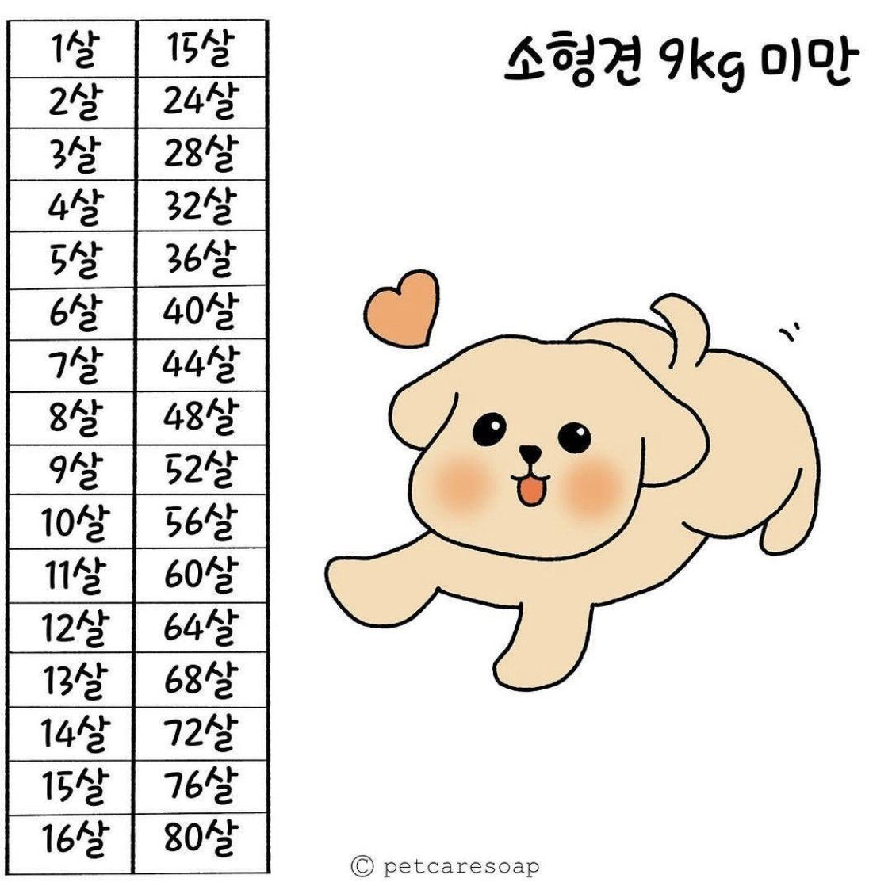

etc · 사진 · 2026-11-24
소형견(9kg 미만) 나이를 사람 나이로 환산한 표
체중 9kg 미만 소형견의 나이 1~16살을 사람 나이로 환산한 대조표다.

- 소형견 1살은 사람 나이로 15살에 해당한다.
- 소형견 2살은 사람 나이 24살, 3살은 28살에 해당한다.
- 3살 이후로는 개 나이 1살이 늘 때마다 사람 나이가 4살씩 늘어난다.
- 소형견 7살은 사람 나이 44살, 10살은 56살에 해당한다.
- 소형견 16살은 사람 나이로 80살에 해당한다.
- 이 표는 체중 9kg 미만 소형견을 기준으로 한다.